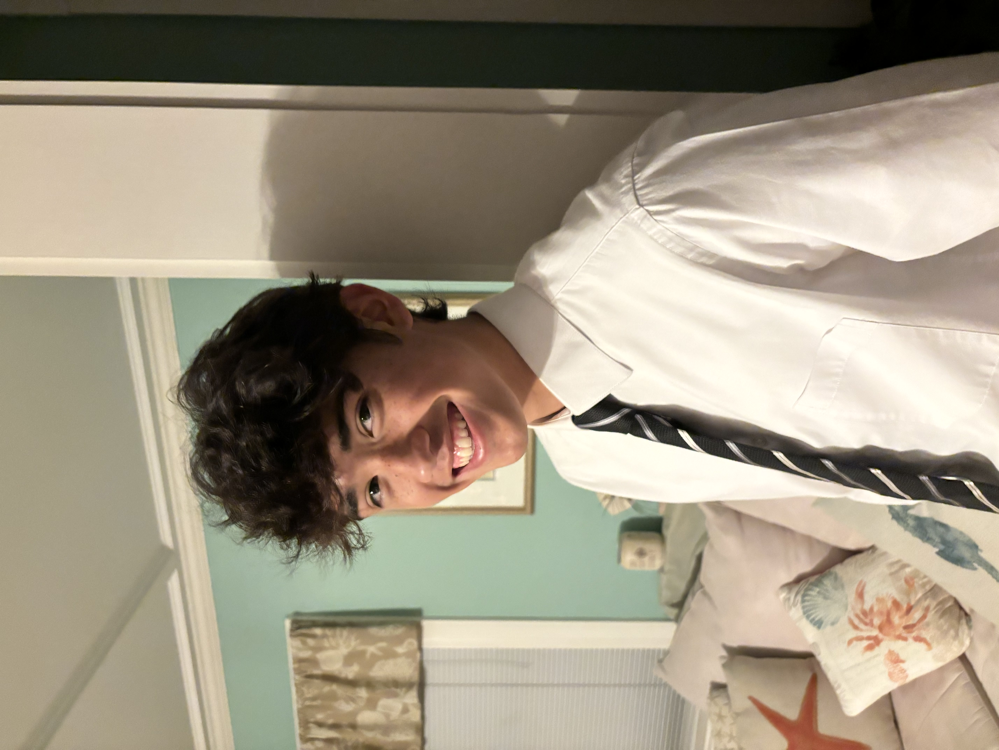
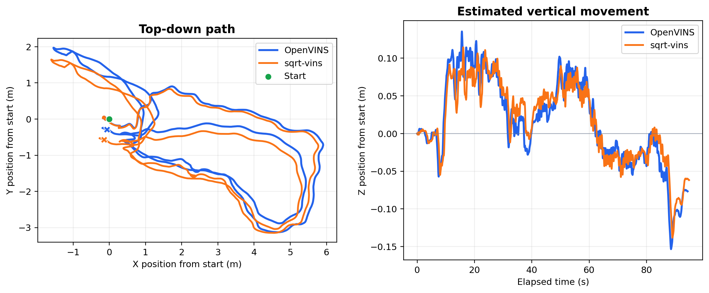

Mechanical engineering portfolio
Tim Harrington
Mechanical Engineering student at George Washington University, from Beverly, Massachusetts. My work spans mechanical design, fabrication, manufacturing, and robotics research.
BS Mechanical Engineering · Expected May 2029

Explore my work

GW EYacht
Drivetrain design, motor mounting, and machine-shop fabrication.
View projectFlowserveManufacturing Engineer Intern
Flowserve
Manufacturing procedures, equipment tracking, and facility improvements.
View experience
Research Lab
Camera calibration and visual inertial odometry in GW’s EPIC Lab.
View researchCSWACertified SOLIDWORKS Associate
CSWA
My SOLIDWORKS certification and practical CAD experience.
View qualification